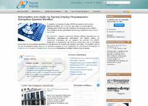
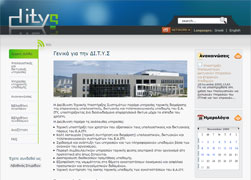
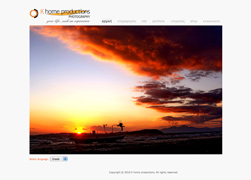
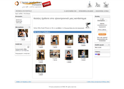
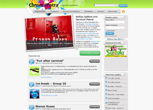
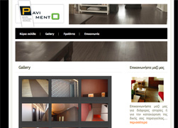

-
Tech Support Portal

A web portal - online library dedicated to technical support documentation,
how-tos and guides for Computer Lab administrators in Greek High and Elementary Schools. This web platform is part
of the Greek School Network initiative and had to be designed and developed from the ground up. The CMS used is
Joomla, with heavy customization to meet the project's needs.
- HTML/CSS/JavaScript
- AJAX
- Template & Logo design
- Joomla CMS Integration
- CAS Login system
- Member management
- Performance optimization
- Server configuration & administration
Visit the project
-
Ditys

An informational web portal dedicated to the Infrastructure and Technical Support Sector of the
Research Academic Computer Technology Insitute. This platform was built ontop of the Joomla CMS with modifications
to support the Single Sign On login system via LDAP authentication as well as the member management system. The platform
was developed for intranet-only use.
- HTML/CSS/JavaScript
- AJAX
- Template & Logo design
- Joomla CMS integration
- Single Sign On Login system
- Member management
- Server administration
-
Khome productions Portfolio

A photography portfolio that was developed for a client, Khome productions. The theme as
requested was "simplicity" and the template was designed with that in mind. The site was integrated into Wordpress
for ease of use by the client, and supports news and gallery management with a custom built gallery script running
on the frontend.
- HTML/CSS/JavaScript
- AJAX
- Template & Logo design
- Wordpress integration & customization
Visit the project
-
Khome productions E-shop

In accordance with their portfolio needs, Khome productions asked us to deliver an e-shop
solution for online web sales of their clients' photos. The implementation is based on osCommerce with (really)
heavy customization.
- HTML/CSS/JavaScript
- Template & Logo design
- Customized orders system
- osCommerce Integration
Visit the project
-
Carnival Patra

CarnivalPatra is a web site for people coming to the city of Patras in search of attractions,
carnival groups and other activities in the period of Greece's most famous carnival. The site was implemented on Wordpress
with some extra customization as far as member management is concerned.
- HTML/CSS/JavaScript
- AJAX
- Template & Logo design
- Wordpress integration
Visit the project
-
Pavimento

Pavimento is one of the leading Linoleum-based floor and wall dressing companies in Greece.
As part of their collaboration with other European companies in the field, they asked for a simple website that would
help inform their clients about what they do and get a glimpse of their handywork.
Visit the project